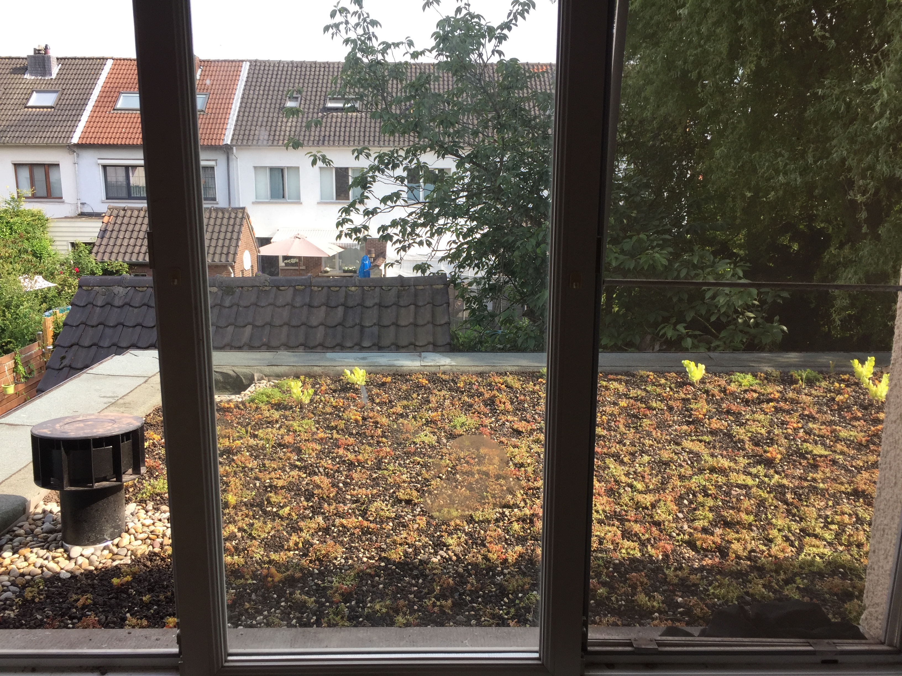
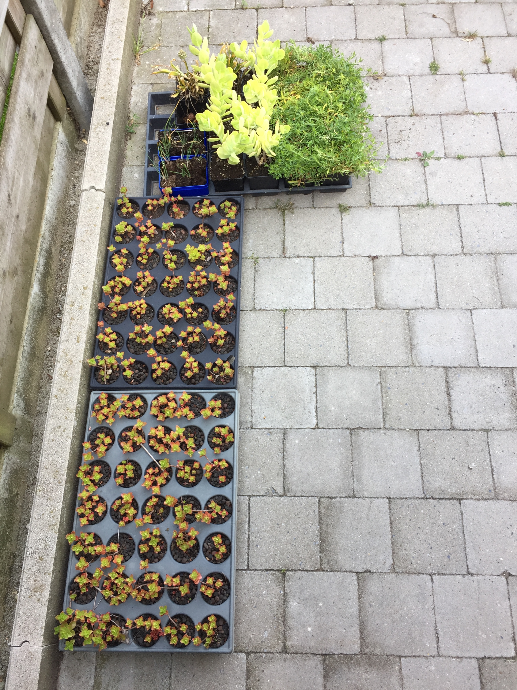
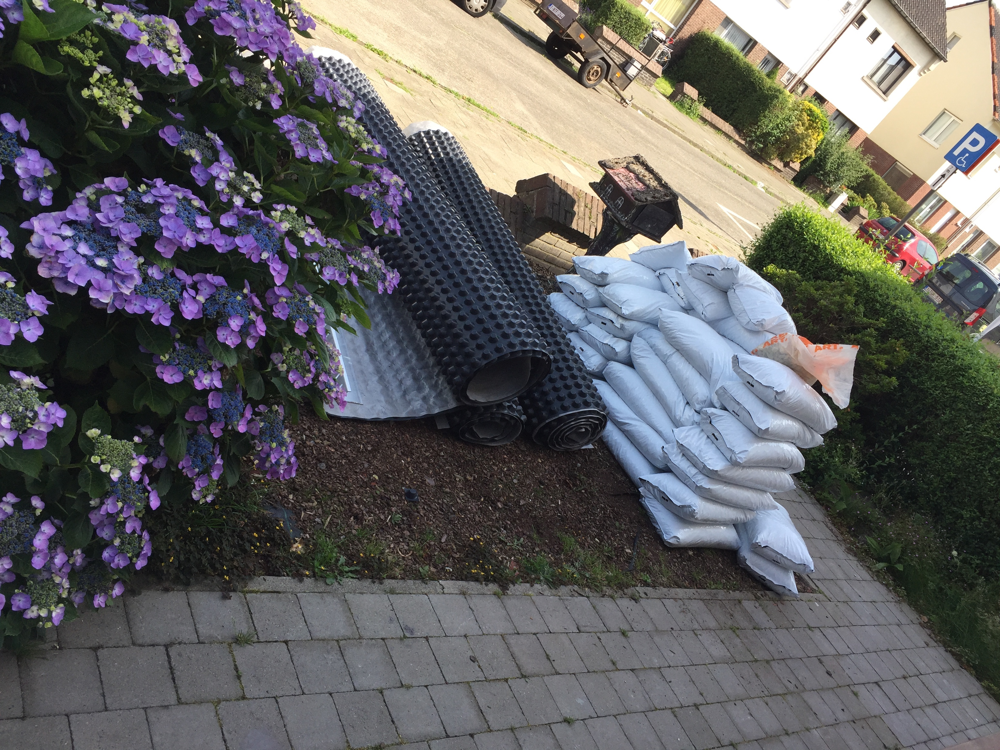
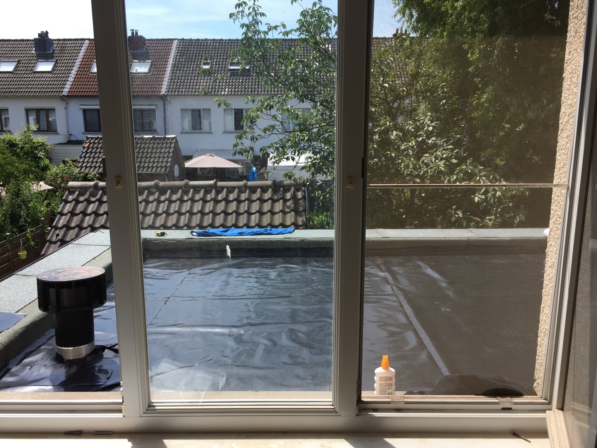
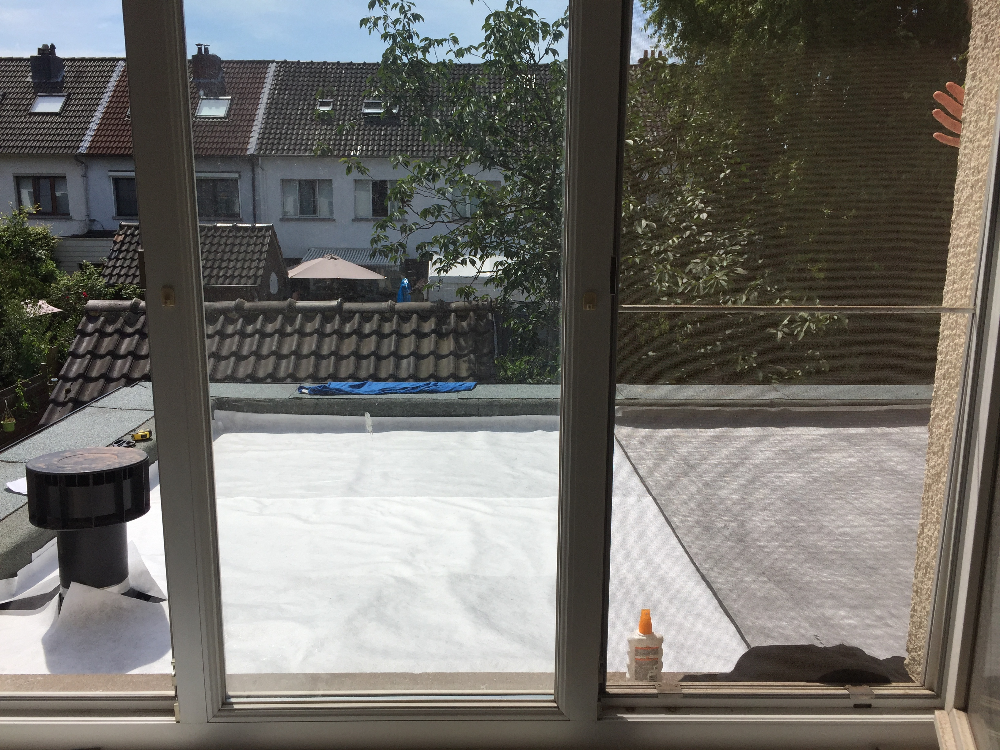
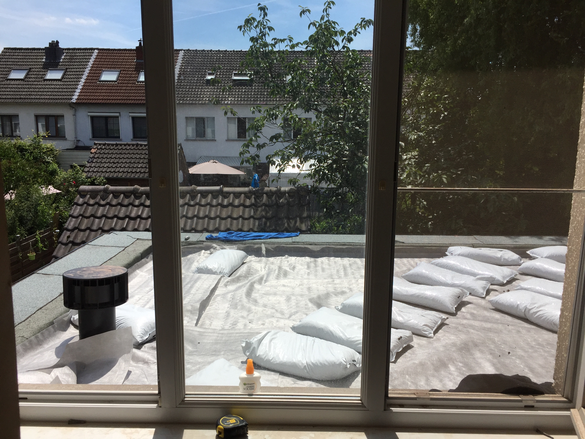
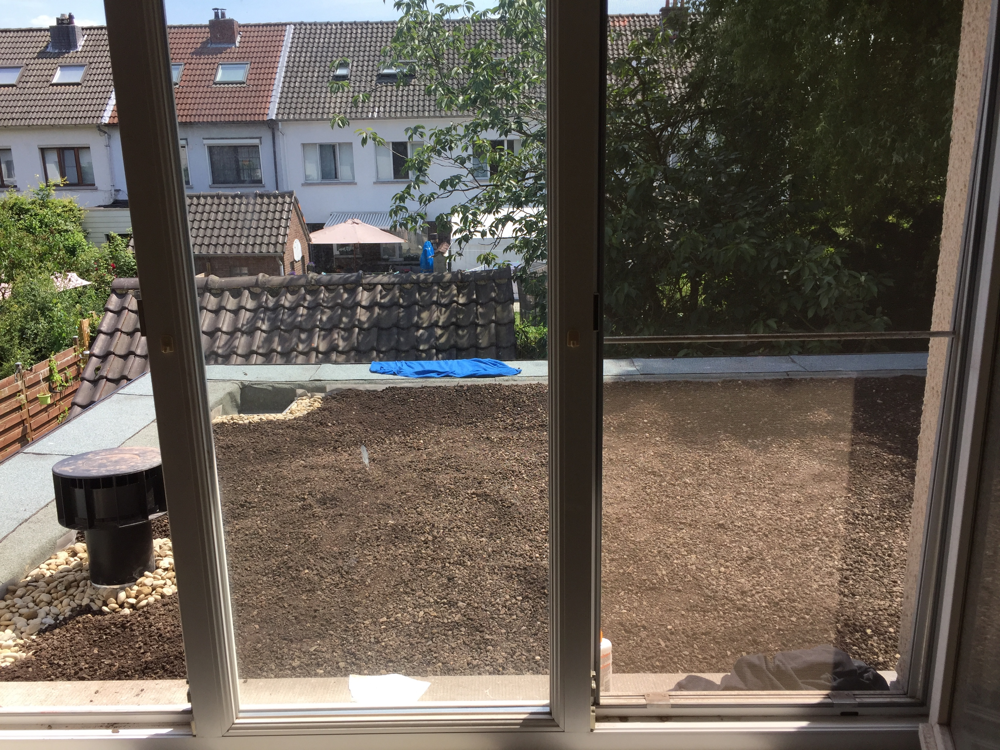
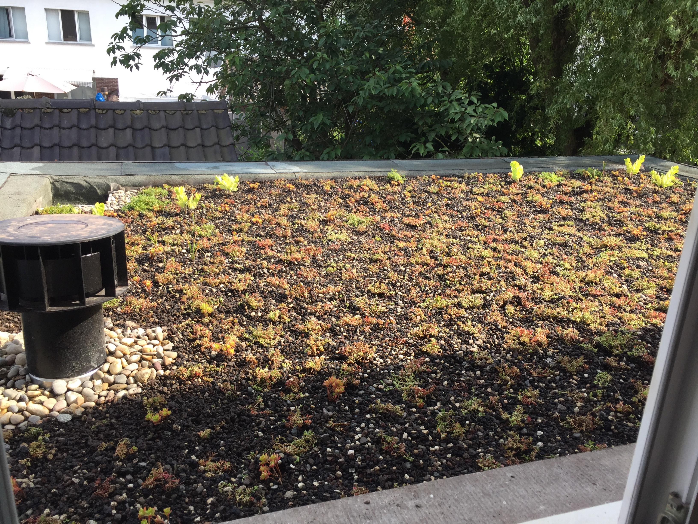

tldr; Een tweede concrete, doch bescheiden stap in m’n bijdrage tot vergroening en het overgaan tot doen was het volgen van een groendakcursus en het aanleggen van een groendak bij een kennis.
Een tijdje geleden volgde ik een tweedaags cursus Opleidingstraject voor een professioneel groendak/ blauw-groendak bij Escala via Syntra West. Net als in m’n vorige post leek mij dit een uitgelezen kans om hier en daar een kleine bijdrage te leveren aan een groenere omgeving. Even daarna was een van m’n vrienden aan het renoveren en hun stad (Wilrijk) levert een flinke premie wanneer je duurzaam renoveert, en groendaken zijn daar een deel van. Dus ik zette m’n opleiding direct in de praktijk om en hielp hen zelf het groendak aan te leggen.
Groendaken
Een groendak is een dak bedekt met planten. In de meeste gevallen zijn dit sedum-planten (vetplanten), maar dit kan zo ver gaan tot een echte tuin op het dak met bomen en moestuinen op. Men onderscheidt een aantal vormen
- extensief: sedumplanten, grassen en kruiden.
- intensief: een echte tuin, met veel verschillende soorten planten en bomen.
- semi-intensief: ergens tussenin beide, zoals bloemenweides
De meeste groendaken zijn extensieve daken, omdat een groendak heel wat massa moet kunnen dragen en een standaard dak dat niet kan. Een extensief dak moet toch zo’n 75 a 150kg/m² kunnen dragen, voor een extensief dak kan dat oplopen tot 400kg/m². Een groendak kan heel zwaar worden door de combinatie van water die het opslaat, het substraat en de groenmassa. Daarbij moet men nog eens de meeste extreme omstandigheden bijrekenen zoals een dikke laag sneeuw die er op ligt.
Lagen
Een groendak is opgebouwd uit een aantal lagen:
- Beschermingslaag: een beschermende wortelwerende laag die je dak beschermt voor de wortels: PE-folie. Indien je dak uit roofing bestaat is deze reeds beschermd.
- Drainage: deze laag zorgt tegelijk voor het overtollige water te laten doorlopen en voor het bufferen van water. De meeste drainagelagen hebben een soort van potjes die watervasthouden en waartussen het overtollige water wegloopt. Afhankelijk van de draagkracht van je dak kan de waterbuffer groter zijn, gaande van 7l/m² tot 21l/m².
- Filterdoek: een geotextiel die uitspoeling van het substraat voorkomt.
- Substraat: het substraat van groendaken is zeker geen tuin- of potgrond, deze wegen veel te zwaar, slibben te makkelijk toe en draineren niet genoeg bij hevige regenval. In plaats daarvan wordt meestal een combinatie van argex en een soort van bemesting, a.d.h.v. organisch materiaal, gebruikt.
- Vegetatie: afhankelijk van het soort dak sedum- of kruidenplanten of grotere planten, struiken en bomen. Deze laag kan ofwel gezaaid, gestekt of in matten gelegd worden.
Draagkracht
Een groot probleem bij groendaken is dat ze in de zomer uitdrogen, de waterbuffers lopen leeg en het substraat droogt helemaal uit. De sedumplanten kunnen dit wel even aan, maar als er extreem warme en droge zomers zijn zoals vorig jaar kunnen ze het ook begeven. Een teken dat de sedums onder stress staan is wanneer ze rood zien. Om dit probleem te voorkomen is het dus aangeraden een zo groot mogelijke waterbuffer en substraat laat te gebruiken. De beperkende factor is hier dus echter de draagkracht.
Praktisch
Ten eerste, zorg er altijd voor dat je de draagkracht kent van het dak. Vraag dit na aan de architect en zorg dat je het op papier/email hebt. Indien er ooit iets gebeurt en je kan aantonen dat het dak onder het gewicht van de draagkracht zit, dan ben jij beschermd. Dan moet je als volgt rekenen:
- waterbuffer = 1kg per 1l/m²
- substraat = 14kg/cm/m²
Om een ietwat kwalitatief dak te hebben dat een beetje tegen droogtes kan moet je op z’n minst 7l buffer hebben en zo’n 6-8 cm substraat, wat de minimale draagkracht al direct op zo’n 90 - 120 kg/m² brengt.
Voordelen
Een groendak heeft heel wat voordelen, op de site van vlaanderen wordt het als volgt samengevat:
- maakt de omgeving mooier
- levert een positieve bijdrage tot de waterhuishouding
- heeft een luchtzuiverend en klimaatzuiverend effect
- zorgt voor een langere levensduur van de dakbedekking
- isoleert geluid
- verhoogt de brandveiligheid.
De groene, levende laag zorgt dus voor een bufferend effect voor geluid, temperatuur en zonneschade, terwijl het bijdraagt aan een groenere, mooiere omgeving. Doordat het water nu niet rechtstreeks van het dak naar beneden loopt vormt je dak nu ook een waterbuffer. Dit zorgt ervoor dat bij hevige regenval het algemeen afvoer netwerk ook minder belast wordt, waardoor overstromingen deels kunnen voorkomen worden. Het bufferen van dit water kan in sommige gevallen ook wel een nadeel zijn, want dat water kan nu niet meer naar de regenput en is dus niet ter beschikking voor huishoudelijk gebruik (beregening e.d.). Dit is zeker altijd een afweging die gemaakt moet worden bij het aanleggen van een groendak!
Subsidies
Vroeger waren er federale premies, maar die bestaan niet meer. Per gemeente of stad kunnen er wel nog premies gegeven worden, deze kan je opzoeken via de premiezoeker. Vraag ook altijd eens na bij je gemeente- of stadsbestuur, het kan altijd zijn dat zij een soort van vergroeningspremie hebben waaronder een groendak kan vallen als het aan bepaalde voorwaarden voldoet.
Handen uit de mouwen
Voor de aanleg van het groendak bij m’n vrienden spraken we een lokale groendak-bouwer aan en geven hen onze restricties/wensen mee. Deze stelde een bestek op met de nodige materialen en kwam deze leveren, de aanleg deden we zelf. Voor een kleine 500 euro en een halve dag werk ging hun dak van dit:
naar dit:

Proces
Levering materiaal
Levering van de stekken.
Levering van substraat en drainagematten.
Beschermlaag
Leggen van de PE-folie
Leggen van de wortelwerende folie
Substraat
Het naar boven brengen van de substraatzakken.
Close-up van de drainagematten

Uitspreiden van het substraat

Afwerken van substraat en de boorden met keien
Stekken
Het planten van de stekken

Het eindresultaat
